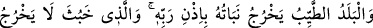

kullarından kendisini gizlemesini bilen birine:
“–Müşriklerin diyarına git. Orada bir sıddîk (özü, sözü doğru bir kul) var.” denildi.
Adam emre uyarak müşriklerin diyarına gitti. Bir müşrik onu esir alıp sonra da
kilisenin hizmetçisine sattı. Bu sebeple bir zaman kilisede sıdk ile hizmet etti. Bir gün o
memleketin kralı kiliseye geldi. Kiliseyi boşalttırdı ve kendisi orada namaz kıldı. Bir
kenara gizlenmiş olan velî zât bu durumu görünce krala gözüktü. Kral:
“–Sen kimsin?” dedi.
Velî:
“–Senin gibi bir müslümanım.” dedi.
Velîye aradığı sıddîkın bu kral olduğu ilham edildi. Sonra velî, bu sıddîk krala
durumunun nasıl olduğunu sordu. Kral:
“–Durumum çok iyi. Rahat bir şekilde yaşıyor, helâl rızık yiyor ve riyadan uzak olarak
sırf Allah için kulluk ediyorum. Müslümanları kolluyorum. Eğer onların kralı olsam,
böyle yapamazdım.” dedi. Sonra da beni serbest bıraktı.
Bu hikayede Allah Teâlâ’nın istediği zaman düşmanları, hesaba katılmayan umulmadık
çok basit bir sebeple helâk edebileceğine işaret vardır. Çünkü O’nun pek gizli lütufları
vardır.
Hâfız der ki:
Gökyüzünün kendi feyzinden suyunu verdiği kılıç
Askerin yardımı olmaksızın bütün cihanı fetheder
Ey gönül! Dostun nihayetsiz lütfundan ümit kesme
Çünkü onun nihayetsiz lütfu herkese ulaşır
Tevhid ehli ve basiret erbâbı, hakiki müessire ve ezelî feyze bakarlar. Yaratılanlara,
vasıtalara ve sebeplere değil.
Allah Teâlâ’dan bizi, ebedî saadete ve sonsuz inâyete kavuşanlardan kılmasını,
hakikat yoluna ve Peygamberimiz’in yoluna girenlerden eylemesini niyaz ederiz.
“Çünkü iyilik eden, esirgeyen O’dur.” (et-Tûr, 52/28)
58. Rabbinin izniyle güzel memleketin bitkisi (güzel) çıkar; kötü olandan ise
faydasız bitkiden başka bir şey çıkmaz. İşte biz, şükreden bir kavim için ayetleri
böyle açıklıyoruz.
“Güzel olan ülkenin” yani, toprağı güzel ve verimli olan yerin demektir.
Farsça tefsirde şöyle denilmektedir: “Ekmeye ve dikmeye uygun olan, taş ve kumdan
arınmış toprak” demektir.
“bitkisi, Rabbi’nin izniyle” iradesi ve kolaylaştırması ile “çıkar.” Allah’ın